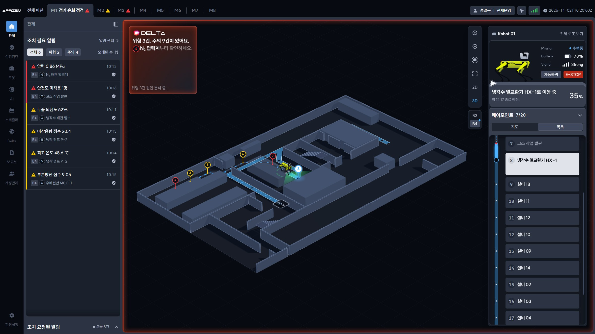
01화면 구성
지도는 가운데 칸을 채우고, 3D 캔버스는 우측 패널 뒤까지 깔립니다. 지도 위에는 도구 · Delta · 팝오버가 얹힙니다.
| 번호 | 항목 | 규격 · 동작 |
|---|---|---|
| 1 | 미션 탭 M1 | 높이 44 · 선택 탭만 이름, 나머지는 번호만(최소 폭 56) · 위험/주의 아이콘 |
| 2 | 조치 필요 알림 | 폭 320 (≤1600px 308) · 줄에 호버하면 지도 핀을 가리킴 → 06 · 09장 |
| 3 | Delta | 지도 칸 왼쪽 위에 겹침 · 폭 295 이 정의서 범위 밖 |
| 4 | 지도 칸 | .map-canvas ≈1136×968 · 휠 · 끌기는 이 칸에서만 받음 · 모델 중심 = 이 칸 중심 |
| 5 | 3D 캔버스 | .map-view ≈1516×1008 · .two-col 전체(우측 패널 뒤까지) · z −1 · 투명 바탕 · 눌리지 않음 |
| 6 | 지도 도구 | 확대 · 축소 · 로봇 위치 · 전체 보기 · 2D · 3D → 02장 |
| 7 | 층 버튼 | B3 · B4, M1 기본 B4 → 11장 |
| 8 | 로봇 카드 | Robot 01 · 상태 배지 "수행중" — 지도 경로 색을 이 배지가 정함 |
| 9 | 진행 상태 | 지금 하는 일 · 남은 시간 · 진행률 |
| 10 | 지도 | 목록 | 웨이포인트 7/20 · [지도] = 미니맵(관제 경로에서 뽑은 mini-routes.js) |
| 11 | 웨이포인트 목록 | 줄 호버 ↔ 지도 번호 핀 · 지금 줄은 밝은 카드 |

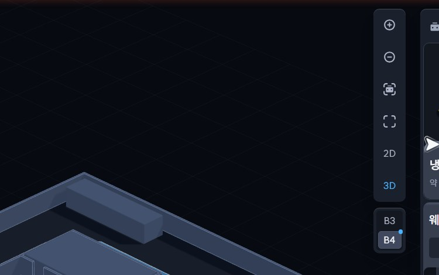
02지도 도구
세로 상자 두 개. 위는 보기 조작, 아래는 층. 카메라 이동은 모두 320ms easeInOutQuad 입니다.
| 번호 | 항목 | 동작 |
|---|---|---|
| 1 | 확대 ＋ | 지도 칸 중심 기준 ×1.5 · 최대 8 · Focus 가 없으면 칸 중심을 Focus 로 |
| 2 | 축소 − | ÷1.5 · 최소 0.3 |
| 3 | 로봇 위치 | 로봇으로 이동 · 배율 max(지금, 2.2) · 각도 유지 · 다른 층이면 층부터 옮기고 +360ms 뒤 이동 |
| 4 | 전체 보기 | Focus 해제 → 처음 각도 · 배율 1 · 층 중심 · 2D 중이면 2D 유지, 배율 0.74 |
| 5 | 2D | 지금 각도를 기억하고 바로 위(pitch 89°)로 · 눌림 글자색 = info |
| 6 | 3D (기본) | 기억한 각도로(없으면 처음 각도) · 이미 눌린 쪽을 다시 눌러도 그대로 |
| 7 | B3 | 층 전환 900ms → 11장 |
| 8 | B4 (M1 기본) | 선택 = secondary 버튼 스타일 · 로봇이 있는 층에 6px 파란 점 .has-robot |
rgb(44 52 67/55%) + blur 10 + 위 테 1px 흰 14% · 라이트 #F0F1F5 80%버튼 36×36 · radius 4 · 아이콘 20 · 글자
--text-secondary · 호버 bg --state-hover · 포커스 2px --border-focus2D · 3D 글자 13/20 · 500 / 층 버튼 높이 24 · radius 4 · 13/18 · 500 · mono · 묶음 bg
--bg-map-chip
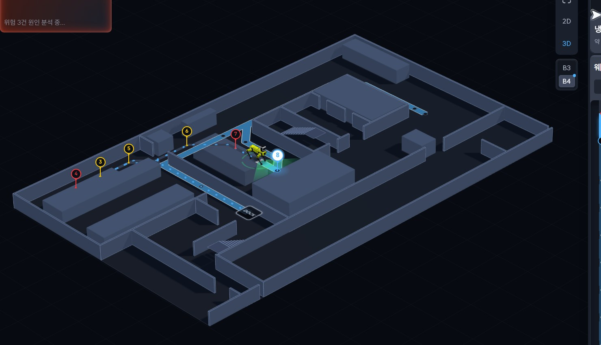
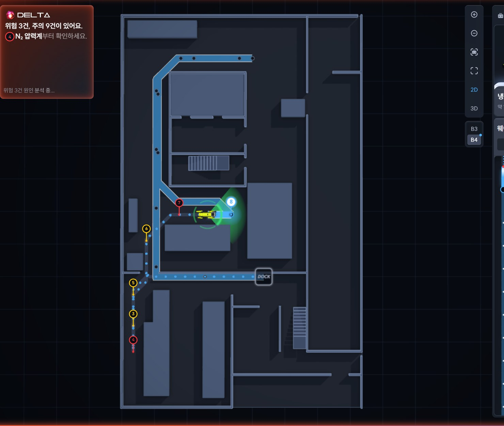
03카메라 · 조작
투시 카메라지만 아주 약하게 — 멀리 세우고 화각을 좁혀 앞뒤 크기 차이가 10% 남짓만 납니다. 설비 배치를 읽는 화면이라 원근을 세게 주지 않습니다.
| 번호 | 항목 | 규격 · 동작 |
|---|---|---|
| 1 | 3D 기본 시점 | yaw 45° · pitch ≈31.0° (예전 아이소메트릭과 같은 방향) · 배율 1 · 여백 1.08 |
| 2 | 2D 탑뷰 | pitch 89° (90°는 화면 좌우가 정해지지 않아 뒤집힘) · 87° 이상을 2D 로 판정 |
| 3 | 원근 | 카메라 거리 = 모델 반지름 × 9 고정 · 화각 = 2·atan((기준크기/배율/2)/(반지름·9)) |
| 4 | 왼쪽 끌기 | 돌아보기 · yaw 무제한 · pitch 6°~89° · 1px = 0.006 rad · 4px 넘게 움직여야 끌기 |
| 5 | 바닥 아래 금지 | 6° 밑으로 안 내려감 — 밑에서 보면 좌우가 뒤집혀 읽힘 |
| · | 판 밀기 | Shift · 가운데 · 오른쪽 끌기 · 층 중심에서 모델 반지름 × 3 까지 · 지도 위 오른쪽 클릭 메뉴 막음 |
| · | 휠 · 핀치 | 배율 0.3 ~ 8 · 커서 밑이 제자리 · deltaY 1 = ×1.0015 |
| · | 클릭 | 핀 → 설비 → 계단(층 이동) 순으로 집음 · 클릭 자리 = Focus Point · Esc 로 해제 |
| · | 카메라 이동 | 320ms easeInOutQuad · yaw 는 짧은 쪽으로 돈다 |

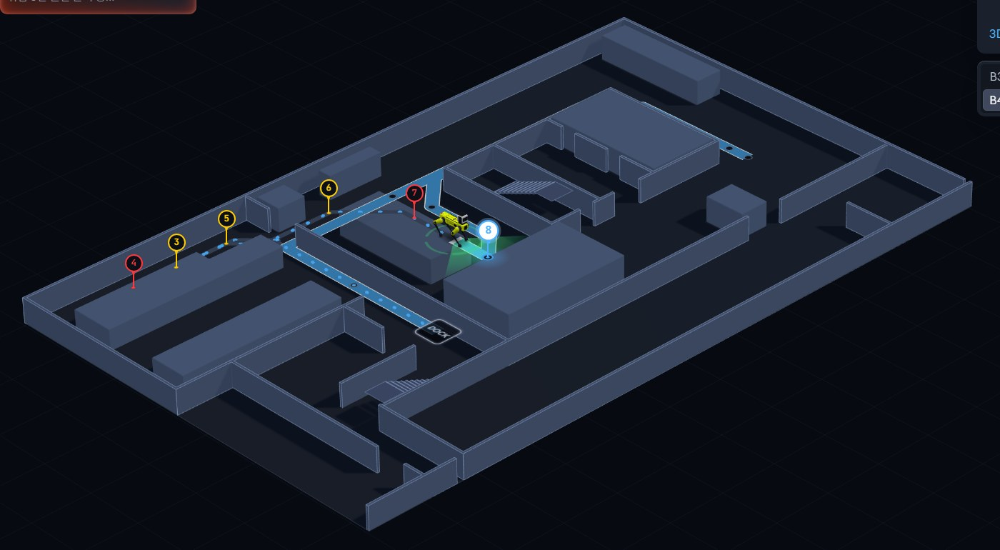
assets/model/apro-4f.glb · 층 그룹(B4 · B3) 안에 레이어 00_floor / 01_wall / 02_equipment / 03_stairs04지도 모델 · 재질
기술 도면 톤 — 덩이는 레이어 색으로 가르고, 외곽선은 어디서나 같은 색 · 같은 굵기. 면은 모두 불투명(가린 것만 골라 비침, 07장).
| 번호 | 항목 | 다크 | 라이트 | 비고 |
|---|---|---|---|---|
| 1 | 바닥 floor | #18202E | #BFC4CC | 선 0.25 · 밝힘 0 |
| 2 | 벽 wall | #3A475F | #DFE2E6 | 선 0.7→0.9 · 밝힘 0.55 |
| 3 | 설비 equipment | #41506A | #E1E4E8 | 선 0.7→1 · 밝힘 0.4 · 선택 가능 |
| 4 | 계단 stairs | #34405A | #D8DBDF | 선 0.32→0.5 · 클릭 = 층 이동 |
| 5 | 외곽선 | #7B8FB4 | #868C93 | 각 25° 이상 모서리 · 벽 이음 선은 지움 |
| 6 | 바닥 격자 | #1F2A3C · 30% | #C4C9D1 | 칸 10m · 건물 폭 약 2.1배 |
| 7 | 바탕 | #070A10 | #D6DAE1 | 캔버스 투명 → 페이지 바탕이 비침 |
재질 MeshStandard · roughness 0.8 · metalness 0.05 · 그림자 PCFSoft 2048
조명 다크 ambient 0.25 · hemi 1.25 · 주광 1 / 라이트 0.95 · 1.6 · 1.5
후처리 구운 AO · Bloom 0.4 · 비네트 0.3 (Bloom · 비네트는 다크만) ·
?fx=off 면 끔
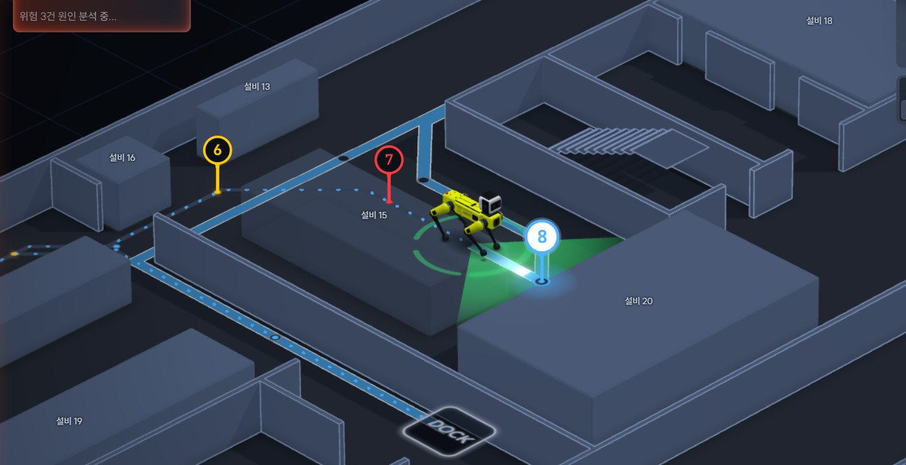
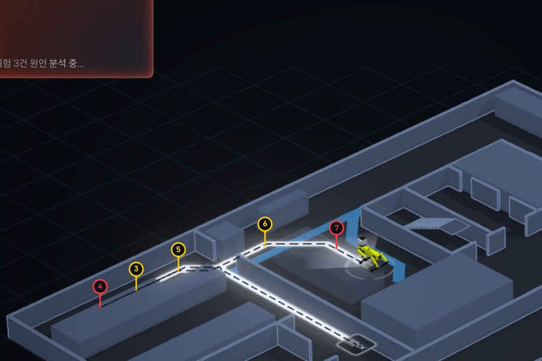
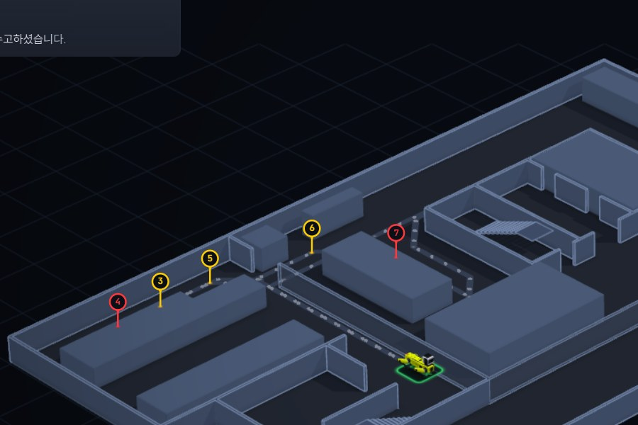
05경로
DOCK → WP-01 … WP-20 → DOCK 의 닫힌 길. 굵기 = 기준 × k 2.85. 길 색은 로봇 상태 배지에서 — 수행중 #4DB2FF / 라이트 #138DEB.
| 번호 | 항목 | 규격 |
|---|---|---|
| 1 | 지나온 길 | 길 색 0.8 · 폭 2×k · 둥근 점선(점 2px · 간격 6px, 우측 레일과 같은 리듬) · 밑 띠 #343E53 / 라이트 #E6E9EE |
| 2 | 지금 구간 | 로봇 → 다음 지점 · 길 색 1 · 폭 4×k · 흰 테 90% · 흐르는 빛(이동 중만, 길 색→흰색 · 꼬리 7% · 한 바퀴 뒤 0.4s 쉼) |
| 3 | 앞길 | 길 색 · 다크 0.38 / 라이트 0.7 · 폭 4×k · 실선 리본(바닥에 눕힘, 마이터 이음) · 흰 테 55% · 되돌아오는 구간은 점선이 실선 가운데 얹힘 |
| 4 | 예정 지점 표식 | 바닥 고리 12px #8894AA · 번호는 숨김 → 06장 |
| 5 | 귀환 길 | 마지막 지점 → DOCK · 앞길과 같은 모양 |
| 6 | DOCK | 바닥 둥근 사각 판 · 로봇이 안에 있으면 초록 #3BE07A(라이트 #1FA35A), 아니면 회색 #9EA8BB |
| 7 | 귀환 중 | 지나온 길이 중립색 #E4E8EF(라이트 #2B3445) 0.75 · 폭 ≈9.7px "도로"로 1800ms 펼쳐짐 + DOCK 쪽으로 흐르는 점선 |
| 8 | 완료 | #9EA8BB 0.6 점선 · 처음 한 번 경로 전체를 3200ms 훑는 빛 |
#9EA8BB(08장).
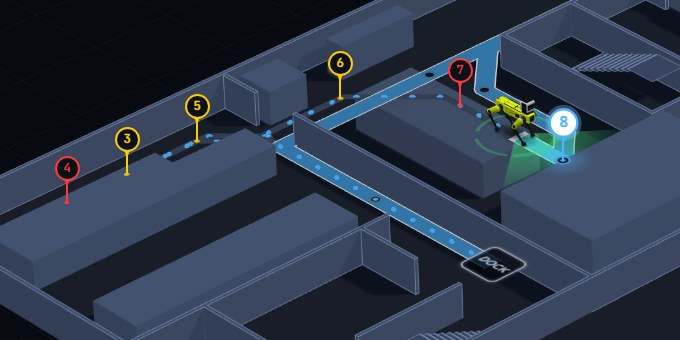
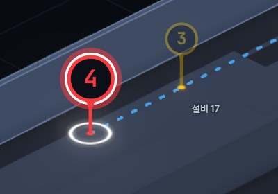
· 기본 = 문제 지점(위험 · 주의 · 건너뜀 · 해결됨) + 지금 지점
· 지나온 정상 · 예정 = 번호 숨김, 바닥 점만
· 우측 목록 줄 호버 → 그 번호만 잠깐(
.is-hot)· 좌측 알림 줄 호버 · 팝오버 → 가리킴(
.is-point)· 미션 설정 · 사전 점검 화면은 전부 표시
06웨이포인트 핀
두 겹 — 바닥에 눕힌 점(3D)은 늘 있고, 그 위 번호 핀(HTML)은 정해진 경우에만. 단계는 번호 핀의 테 색이 말합니다.
| 번호 | 항목 | 규격 (다크 / 라이트) |
|---|---|---|
| 1 | 위험 핀 | 속 #0A0F18 / #FFFFFF · 테 · 번호 #FF383C |
| 2 | 주의 핀 | 속 #0A0F18 / #FFFFFF · 테 #FFCC00 / #F2A900 · 번호 #FFCC00 / #8A6100(흰 바탕 대비) |
| 3 | 지금 지점 | 속 #FFFFFF · 테 · 번호 = 길 색 · 1.2배 · 측정 중엔 반전(길 색 속 · 흰 번호) |
| 4 | 바닥 글로우 | 지금 지점만 · 52px · 0.6 / 0.45 · 위험 · 주의 지점엔 없음 |
| 5 | 바닥 점 | 지나온 정상 원판 7 · 위험 · 주의 원판 7(단계 색) · 예정 고리 12 · 건너뜀 점선 고리 11 |
| 6 | 핀 치수 | 머리 20×20 · 테 2 · 번호 JetBrains Mono 700 9px · 막대 폭 2.25 · 높이 20(설비에 묻히면 44) · 배율 따라 0.8~2.2배 |
| 7 | 가리킴 | 머리 1.4배 · 1.2s 퍼지는 링(흰 2px + 핀 색 14px) |
| 8 | 나머지 흐림 | 가리키는 동안 다른 핀 0.35 |
| 9 | 지점 링 | 가리킨 지점 바닥 링 |
| · | 기본 · 해결됨 | 기본(호버 때) 테 --pin-plain #4E576A / #E0E3E9 · 번호 보조 글자색 · 해결됨 테 #9EA8BB · 방금 정상 측정 = 초록 #34C759 1.4s |
| · | 겹침 · 클릭 | 26px 안에서 겹치면 우선순위로 남김(위험 · 주의는 솎지 않음) · 클릭 = 바닥 점 14px + 머리 +4px + 막대 ±6px |

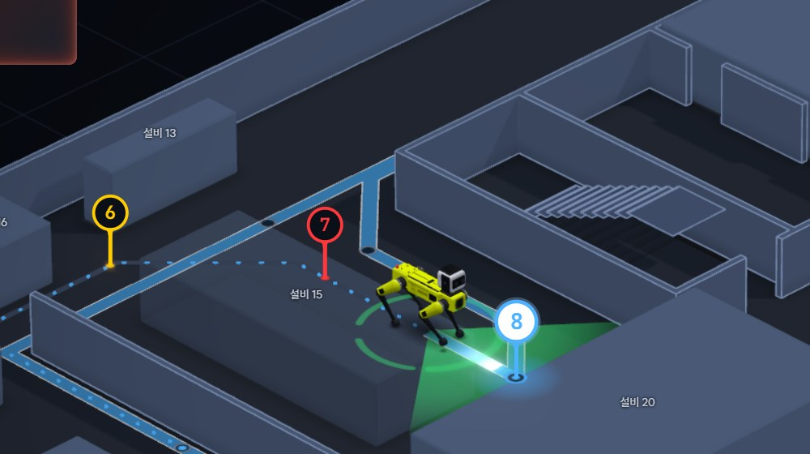
07로봇
"지금 여기"는 화면에서 가장 밝아야 합니다. 3D 로봇은 늘 맨 위에 그리고(설비에 가리지 않음), 로봇을 가린 벽 · 설비는 면 35% 로 비칩니다.
| 번호 | 항목 | 규격 · 동작 |
|---|---|---|
| 1 | 3D 로봇 | SPOT 모델 · 배율 1 에서 높이 약 46px, 배율 따라 커짐 · 다음 지점 쪽을 봄 · 깊이 지운 뒤 맨 마지막에 그림 |
| 2 | 바닥 호 v7 | 4방향 호 · 앞 호 폭 14 · ±44° · blur 12 / 옆 호 3개 폭 12 · ±32° · 30% · 걷는 동안 앞 호만 2.4s 주기 35% ↔ 100% |
| 3 | 시야 부채 | 길이 = 모델 반지름 × 0.17 · 펼침 100° · 방사 그라데이션 1 → 0.55@60% → 0 · 초록 #3BE07A 0.55 |
| 4 | 흐르는 빛 | 지금 구간 위 · 30fps → 05장 |
| 5 | 목적지 | 지금 지점 핀 + 바닥 글로우 → 06장 |
| · | 호 · 부채 색 | 기본 #3BE07A · 위험 · 비상정지 #FF383C · 일시정지 #FFB020 · 귀환 #9EA8BB |
| · | 누르는 자리 | DOM .map-bot-hit 52×52 · 배율 clamp(zoom^0.7, 1, 2.8) · 누르면 로봇 툴팁 |
| · | 가림 처리 | 대상(로봇 · Focus) 둘레 32px · 광선 48개 · 20% 이상 가리면 면 35% · 12% 밑으로 내려가야 복귀 · 75° 위 탑뷰에선 쉼 |
| · | 동작 줄이기 | OS 동작 줄이기 설정이면 깜빡임 · 흔들기 · 흐르는 빛 끔 |

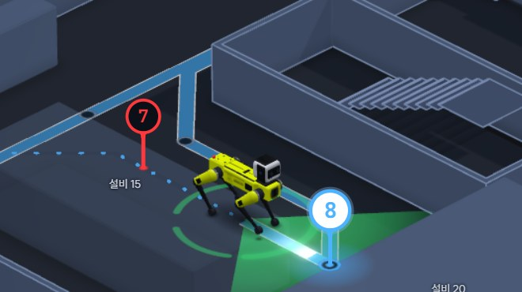
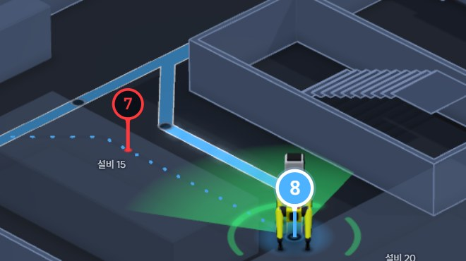
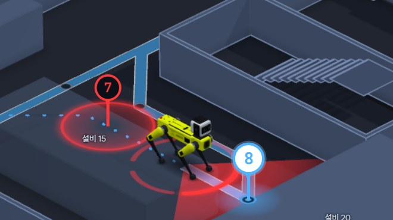
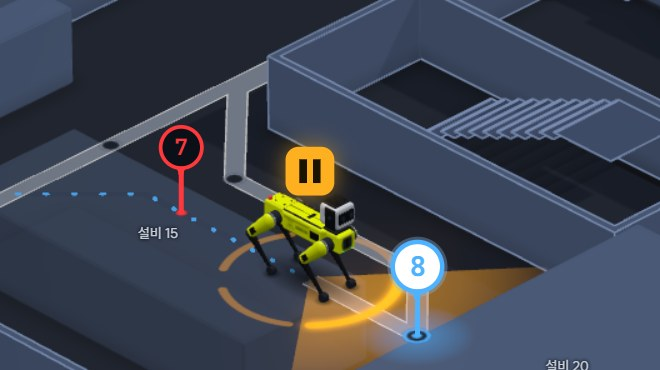
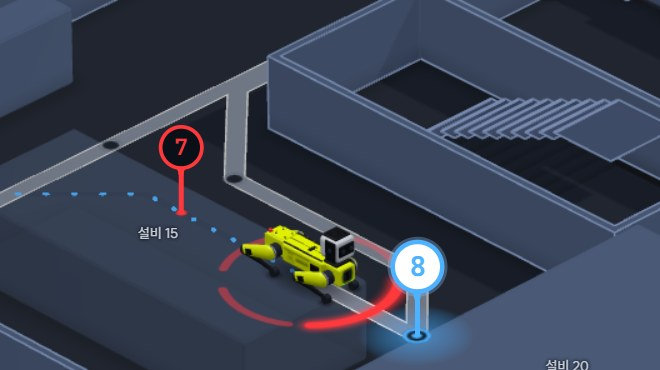
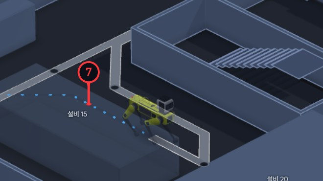
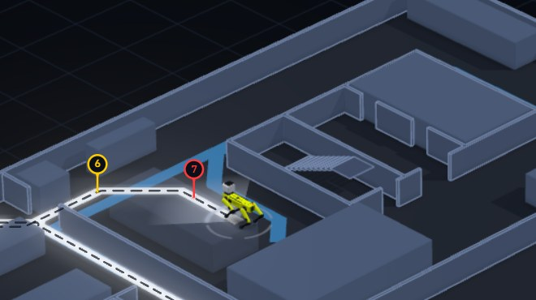
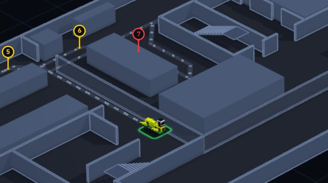
mode 하나와 경로 위 거리 s 하나로 움직입니다. 실제 연동에선 로봇 데이터로 이 두 값을 넣으면 됩니다. 이벤트 — aprism:waypoint · aprism:map-alert · aprism:robot-heading · aprism:rr-mode(완료 때 목록 접기)08로봇 상태 8종
상태마다 로봇 자세 · 바닥 호 색 · 경로가 함께 바뀝니다.
| 번호 | 상태 | 로봇 | 호 · 부채 | 경로 |
|---|---|---|---|---|
| 1 | run 이동 | 걷기 | 초록 · 앞 호 깜빡 | 흐르는 빛 |
| 2 | inspect 측정 | 서기 | 초록 · 부채가 ±0.42rad 흔들림 · 앞 호 1.8s 숨쉬기 | 흐르는 빛 없음 |
| 3 | alert 위험 | 서기 | 빨강 #FF383C | 알림 지점 빨간 바닥 링 1.6s 숨쉬기 → 09장 |
| 4 | pause 일시정지 | 서기 · 머리 위 Ⅱ 버튼(22×22) | 주황 #FFB020 | 지금 · 앞길 회색 |
| 5 | estop 비상정지 | 앉기 | 빨강 · 부채 없음 | 지금 · 앞길 회색 |
| 6 | lost 끊김 | 마지막 자세로 멈춤 · 0.4 | 숨김 | 지금 구간 0.35 |
| 7 | return 귀환 | 걷기(DOCK 로) | 회색 | 중립색 도로 + 흐르는 점선 |
| 8 | done 완료 | DOCK 안에서 앉기 | 숨김 | 회색 점선 · 한 번 훑는 빛 · 우측 목록 접힘 |

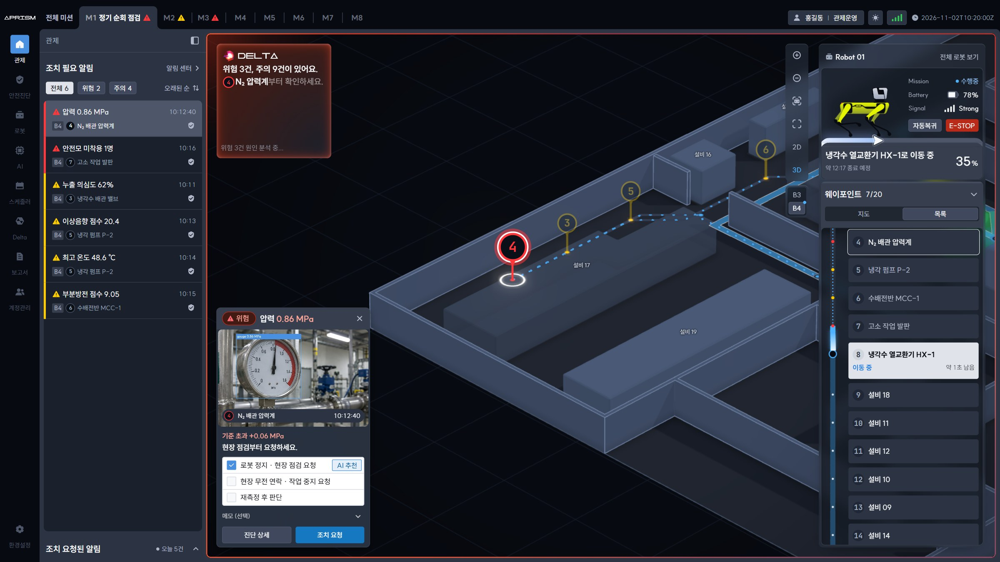
09알림 지점 · 팝오버
위험도 정책대로 위험 · 주의만 지도에 색으로 올라옵니다. 알림 하나를 고르면 목록 · 지도 · 팝오버 · 우측 목록이 같은 지점을 가리킵니다.
| 번호 | 항목 | 규격 · 동작 |
|---|---|---|
| 1 | 고른 알림 줄 | 눌림 배경 · 시각을 초까지(10:12:40) |
| 2 | 가리킨 핀 | 1.4배 + 퍼지는 링 · 카메라가 배율 max(지금, 2.4)로 이동, 지점을 칸 중심보다 30px 위에 |
| 3 | 지점 바닥 링 | 가리킨 지점 표시 · 위험(alert) 상태에선 빨간 링: #FF383C 6 · blur 16 · 1.6s 숨쉬기 0.55↔1 |
| 4 | 다른 핀 | 0.35 로 흐려짐 |
| 5 | 팝오버 머리 | 판정 칩(위험) · 제목 16/24 bold · ⋮(크게 보기 / 패널에 고정) · 닫기 |
| 6 | 현장 사진 | 높이 187 · radius 8 · 위치 · 감지 시각 |
| 7 | DELTA 조치 제안 | 기준 대비 값 · 조치 체크(AI 추천 표시) · 메모 |
| 8 | 버튼 | [진단 상세] 보조 · [조치 요청] 주요(파랑 하나) |
| 9 | 우측 목록 | 해당 지점 줄이 위로 · 테두리 강조 |
--fac-bg 92% + blur 12.
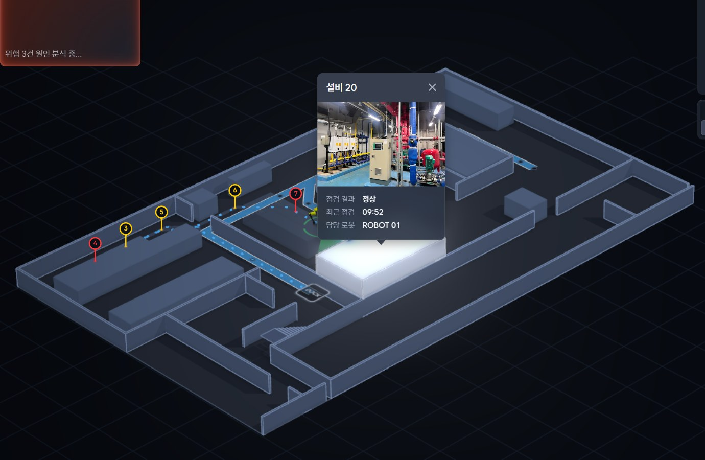
10설비 선택
지금 층의 설비(equipment 레이어)만 집을 수 있습니다. 집으면 덩이가 밝아지고 윗면 가운데에 카드가 섭니다.
| 번호 | 항목 | 규격 · 동작 |
|---|---|---|
| 1 | 선택 설비 | 면 #AFB7C8 · 선 #E0E3E9 (라이트 #CFE0FF · #1D5FD6) · 외곽선 두 겹(폭 6 / 14% + 폭 2 / 85%) · 가려진 부분 28% 유령선 |
| 2 | 카드 머리 | 설비 이름 · bg --bg-raised |
| 3 | 닫기 | × · Esc 도 같음 |
| 4 | 사진 | 220×132 |
| 5 | 정보 줄 | 점검 결과 · 최근 점검 · 담당 로봇 |
| 6 | 꼬리 · 자리 | 14×8 · 윗면 가운데에 붙음 · 지도 칸 안 8px 로 자름 |
| · | 호버 | 선 #9AA1AE(라이트 #5B6577) · 폭 1.6 · 커서 .is-picking |
| · | 이름 라벨 | 배율 1.35 이상에서 설비 윗면에 이름(07장 그림의 "설비 15") |
--bg-raised 92% + blur 12 · 그림자 다크 0 6px 16px rgb(0 0 0/35%) + 안쪽 1px 흰 8% / 라이트 14% · 6%
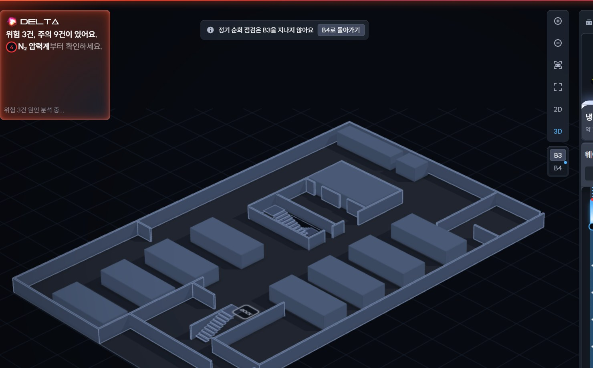
11층 전환
한 번에 한 층만 보입니다. 층 버튼이나 계단을 누르면 층이 페이드로 바뀌며 카메라가 올라가고, 도착하면 그 층 전체를 담습니다.
| 번호 | 항목 | 규격 · 동작 |
|---|---|---|
| 1 | 층 안내 | "정기 순회 점검은 B3을 지나지 않아요" · 위 20 · 가운데 · radius 8 · 지도 유리 면 |
| 2 | 돌아가기 | [B4로 돌아가기] secondary · xs |
| 3 | B3 선택 | secondary 버튼 스타일 |
| 4 | B4 · 로봇 점 | 로봇이 있는 층 우상단 6px 파란 점 |
| 5 | 위층 계단 | 아래층으로 뚫린 계단 구멍(셰이더) · 클릭 = 층 이동 |
| 전환 구간 (0~1, smoothstep) | 층 버튼 900ms | 계단 1400ms |
|---|---|---|
| 계단으로 다가감 | — | 0 – 0.3 |
| 떠나는 층 100→20% · 오는 층 0→40% | 0 – 0.45 | 0.22 – 0.48 |
| 카메라 올라감(격자도 같이) | 0.15 – 0.75 | 0.34 – 0.74 |
| 오는 층 40→100% · 떠난 층 → 0 | 0.55 – 1 | 0.62 – 1 |
| 도착 후 전체 보기 | 320ms | 520ms |

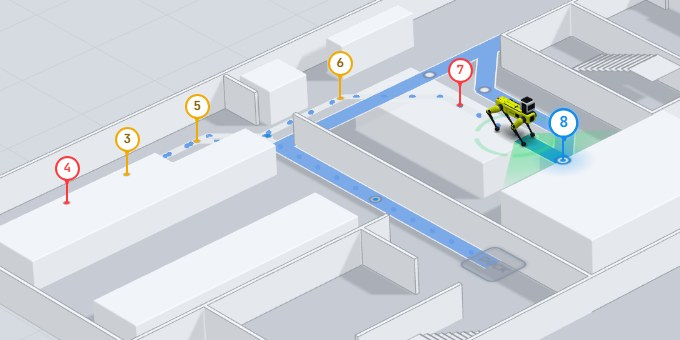
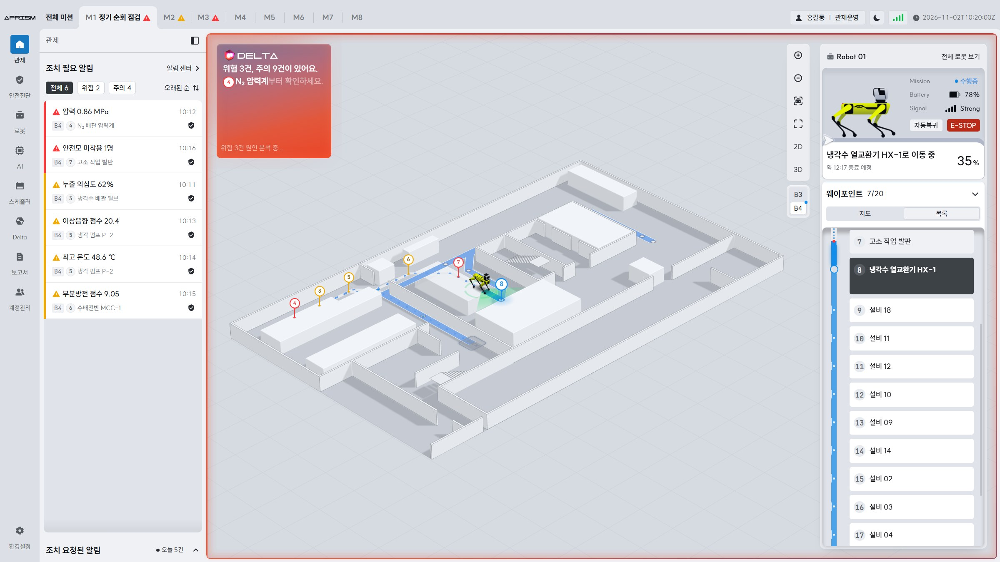
12라이트 모드
구조 · 동작은 같고 색만 바뀝니다. 밝은 바닥에서 묻히는 것(흰 선 · 노랑 번호)을 한 단 진하게 뒤집었습니다. Bloom · 비네트는 끕니다.
| 번호 | 항목 | 다크 → 라이트 |
|---|---|---|
| 1 | 위험 핀 | 속 #0A0F18 → #FFFFFF · 테 · 번호 #FF383C 그대로 |
| 2 | 주의 핀 | 테 #FFCC00 → #F2A900 · 번호 → #8A6100(노랑은 흰 바탕 대비 2:1) |
| 3 | 지금 지점 | 길 색 #4DB2FF → #138DEB |
| 4 | 앞길 | #4DB2FF 0.38 → #138DEB 0.7 · 점선 밑 띠 #343E53 → #E6E9EE |
| 5 | 모델 면 | 바닥 #BFC4CC · 벽 #DFE2E6 · 설비 #E1E4E8 · 계단 #D8DBDF · 외곽선 #868C93 |
| 6 | 로봇 · 표식 | 지나온 길 #9EA8BB → #4B5563 · 로봇 · DOCK 표식 #F7F8FA → #2B2F36 |
| · | 조명 | ambient 0.25 → 0.95 · hemi 1.25 → 1.6 · 주광 1 → 1.5 · AO ×0.7 |
| · | 바탕 · 도구 | 지도 바탕 #070A10 → #D6DAE1 · 도구 상자 유리 → #F0F1F5 80% |

위험도 4단계 — 지도 · 아이콘 색 (다크 / 라이트)
#E1AB13 아이콘
경로 · 로봇 (수행중)
13색 토큰
지도 둘레 UI 가 쓰는 토큰. 라이트 값은 v5.css 덮어쓰기까지 반영한 최종값입니다.
| 토큰 | 다크 | 라이트 |
|---|---|---|
bg-page | #070A10 | #E8EBEF |
bg-panel | #202838 | #F7F8FA |
bg-cell | #2C3443 | #E8EBEF |
bg-raised | #373F4E | #FFFFFF |
bg-map-chip | rgb(10 14 21 / 50%) | #D5D7DB |
bg-glass | rgb(44 52 67 / 55%) | rgb(255 255 255 / 92%) |
border-default | #3F485C | rgb(11 14 19 / 14%) |
border-focus | #3B79D5 | #6AA7E7 |
text-primary | #F7F8FA | #0B0E13 |
text-secondary | #AFB7C8 | #262A30 |
text-tertiary | #9EA8BB | #63686F |
text-disabled | #4E576A | #A4A9B0 |